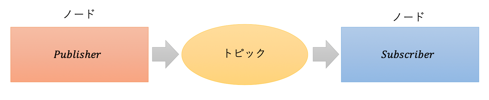

ROS (Robot Operating System)
ROSは、ロボットアプリケーションの開発を支援するライブラリやツールを提供するミドルウェアです。 これにより、ロボット間の通信を簡単に実現できます。
Pub/Sub通信
ROSでは、ネットワークに接続された実行プログラムを「ノード」と呼び、ノード間で「トピック」という名前付きバスを介してメッセージをやり取りします。 メッセージを送信するノードをPublisher（配信者）、メッセージを受信するノードをSubscriber（購読者）と呼びます。

実行環境
- ROS Kinetic
- Ubuntu 16.04 LTS
- Python 3.8.5
Publisherのプログラム
#!/usr/bin/env python
# license removed for brevity
import rospy
from std_msgs.msg import String
def talker():
# Publisher('トピック名', 型, キューサイズ)
pub = rospy.Publisher('chatter', String, queue_size=10)
# ノードの初期化
rospy.init_node('talker', anonymous=True)
# ループ周期
rate = rospy.Rate(10) # 10hz
while not rospy.is_shutdown():
hello_str = "hello world %s" % rospy.get_time()
rospy.loginfo(hello_str)
# データをパブリッシュ
pub.publish(hello_str)
rate.sleep()
if __name__ == '__main__':
try:
talker()
except rospy.ROSInterruptException:
pass
Subscriberのプログラム
#!/usr/bin/env python
import rospy
from std_msgs.msg import String
def callback(data):
rospy.loginfo(rospy.get_caller_id() + "I heard %s", data.data)
def listener():
# ノードの初期化
rospy.init_node('listener', anonymous=True)
# Subscriber('トピック名', 型, コールバック関数)
rospy.Subscriber("chatter", String, callback)
# コールバックが呼ばれるまで待機
rospy.spin()
if __name__ == '__main__':
listener()
PublisherとSubscriberを実装したプログラム
PublisherとSubscriberの機能を1つのノードに実装すると、次のようになります。
この例では、同じノードがchatterトピックに対してメッセージを配信し、同時にそのトピックを購読しています。
#!/usr/bin/env python
# coding: utf-8
import rospy
from std_msgs.msg import String
def callback(data):
rospy.loginfo(rospy.get_caller_id() + "I heard %s", data.data)
def controller():
# ノードの初期化
rospy.init_node('controller', anonymous=True)
# Subscriber
sub = rospy.Subscriber('chatter', String, callback)
# Publisher
pub = rospy.Publisher('chatter', String, queue_size=1)
# ループ周期
rate = rospy.Rate(10)
while not rospy.is_shutdown():
hello_str = "hello world %s" % rospy.get_time()
rospy.loginfo(hello_str)
# データをパブリッシュ
pub.publish(hello_str)
rate.sleep()
if __name__ == '__main__':
try:
controller()
except rospy.ROSInterruptException:
pass